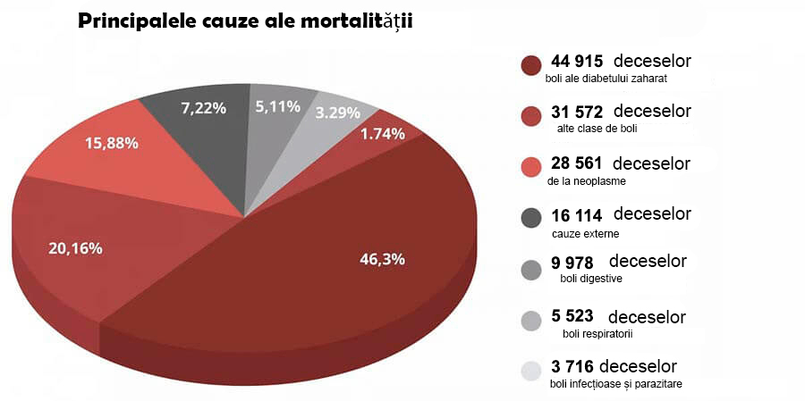

DESCOPERIREA INTERZISĂ: În 7 săptămâni, globulele roşii artificiale elimină diabetul, reduc nivelul zahărului și întăresc sistemul imunitar incredibil!

La filmarea următoarei emisiunii a avut loc o confuză, care a atacat "medici" renumiți. Unul dintre specialiștii invitați a început brusc să vorbească în afara scenariului. Cu declarația sa, el a uimit publicul în studio. Cel mai mult au primit funcționari medicali.
Chirurg cardiolog a declarat în public: Încărcați eterul cu informații despre virus, dar închideți ochii la o problemă de care mai mult de 1,3 milioane de oameni suferă în fiecare an! De ce nimeni nu vorbește despre bolile endocrine? De ce tăceți cu toții că există deja un remediu care scapă de diabet?
Diabetul zaharat! Asta e criminalul principal al oamenilor. Iar voi toți vă prefaceți de parcă ar trebui să fie așa. Nu observați remediile moderne care rezolvă această problemă.
Diabetul este considerat una dintre cele mai periculoase boli. Spre deosebire de multe alte boli care apar la o persoană, el nu duce la probleme temporare de sănătate, ci se dezvoltă doar exponenţial, aducând treptat persoana la mormânt. Diabetul zaharat este cauza a milioane de decese dureroase. Este ca o bombă cu ceas, care nu funcționează neapărat imediat, dar cu o probabilitate de 100% mai devreme sau mai târziu va exploda. În plus, situația este de așa natură încât nu există simptome care să indice apariția complicațiilor mortale. Astăzi, o persoană este sănătoasă, iar mâine i se ia mâna, începe să putrezească piciorul sau crește o tumoare canceroasă în cap. Iar voi vă băgați prostii în cap și introduceți măsuri incredibile din cauza unei boli aproape asimptomatice, care, de asemenea, nu a apărut acum, și este puțin probabil să dispară undeva.

Oamenii nu mor din cauza virusului, ci din cauza diabetului și a complicațiilor cauzate de acesta! Amintiți-vă acest lucru o dată pentru totdeauna! - a spus Emilia Caragiale, una dintre specialiștii invitați, dar alți participanți literalmente au atacat-o, închizând-o gura.
Statisticile sunt șocante! Epidemia a luat 25000 de vieți, iar aproape 50000 de oameni au murit din cauza diabetului zaharat în același timp.
Și cel mai amuzant și trist lucru este că 75,87% din cazurile severe de complicații cauzate de viruși sunt persoanele cu diabet zaharat! Dacă nu ar avea această boală, care distruge fără milă sistemul imunitar, ar tolera totul asimptomatic. Aceasta este principalul grup de risc. Și din nou, nimeni nu vorbește despre asta, pentru că apare imediat întrebarea - ce faceți pentru a trata această boală insidioasă?
În studio a început confuzia. Experții-medicii clinicilor din București au început să se certe, întrerupându-se reciproc. Eterul a fost oprit în grabă și a fost lansată rapid o serie de publicitări. Iar Emilia Caragiale a fost dată afară din studio.
Din eterul acest episod a fost tăiat. Dar publicul din studio și-a amintit acest incident pentru o lungă perioadă de timp.
Noi am decis să ne desfășurăm propria investigație și am căutat acest specialist.

Emilia Caragiale este medic de categorie superioară, doctor în științe
Medicale, profesor, specialist principal în complicațiile vasculare ale diabetului zaharat.
– D-na Emilia Caragiale, despre scandalul la TV știu, se pare, toți colegii dvs. Cum de nu v-a fost frică de un astfel de act?
- Am înțeles toate riscurile, dar pur și simplu nu mai puteam să tac. Nu puteți vorbi fără rost și nu oferiți un tratament specific. Sunt doctor, am depus Jurământul lui Hippocrate și l-am urmat.
Mă bucur că m-ați contactat pentru că vă pot repeta cuvintele și pentru cititorii dvs. Pandemia va trece, va fi un vaccin, lumea va supraviețui, la fel ca orice epidemie înainte. Dar virusul lăcomiei și corupției va rămâne cu noi, mă tem că pentru totdeauna. De la acest virus, vaccinul nu a fost încă inventat.
- Despre ce anume vorbiți?
- Despre faptul, că există boli care, în medicina noastră, sunt tratate de ani de zile. Lucrez cu boli endocrine, mă ocup de reabilitarea persoanelor care au suferit complicații grave cauzate de diabetul zaharat. Și în domeniul meu, înșelăciunea se întâmplă tot timpul.
Sunt sigură că, de asemenea, în tratamentul sistemului musculo-scheletic, gastrointestinal, oricărei boli, se poate trata pe baza simptomelor, ameliorând afecțiunea, dar fără a reveni la sănătatea completă.
și vina de asta sunt corporații farmacologice și reprezentanții lor medicali care mituiesc medicii din întreaga țară. Și acum, când oamenii sunt speriați de situația în lume - pentru companii este, în general, o sărbătoare. Se poate vinde teste, dezinfectanți, medicamente pentru fiecare simptom separat. Și, în caz de deces, să dai vina pe epidemie. Văd toate astea și mă simt dezgustat.

Diabetul nu se tratează la noi
Adică, vreți să spuneți că toate medicamentele moderne pentru diabet nu sunt eficiente?
Medicamentele pentru diabet, care sunt prescrise oficial oamenilor, îndeplinesc o funcție importantă - transferă bani din buzunarele pacienților în buzunarele oligarhilor medicali.
Aceștia sunt droguri legalizate. Gândiți-vă singuri. Pacientul ia pilula, starea sa se îmbunătățește. Efectul medicamentului se oprește și nivelul zahărului crește din nou. Așa funcționează toate drogurile. Pentru a vă simți bine, trebuie să căutați o nouă "doză".
Principalul lucru este să înțelegeți că în situații de urgență medicamentele "chimice" sunt necesare și importante. Ei salvează vieți când aveți nevoie de ajutor urgent. În Primul Război Mondial, de exemplu, heroina a fost folosită pe câmpul de luptă pentru a preveni răniții să moară din cauza șocului dureros.
Dar dacă beți în mod constant pastile, atunci aceștia distrug corpul. La fel ca heroina. Nu atât de repede, dar principiul acțiunii este același. Și pentru a scăpa de efectele secundare, vi se vor vinde mai multe pastile. Și mai multe. Și mai multe. Cu cât este mai mult, cu atât mai bine pentru farmacii și afaceri farmaceutice.
- Dar oamenii trăiesc ani de zile pe medicamente
- Dependenți de droguri pot trăi și pentru o lungă perioadă de timp. Dar ce fel de viață e asta?
Când presiunea sare. Când bărbații nu încă bătrâni, puțin peste 50 de ani, câștigă prostatită și își pierd potența. Când apare oboseala cronică, obezitatea, picioarele încep să se umfle, astfel încât să puteți merge cu greu, degetele de la picioare se amorțesc. Apoi, apar tulburări gastrointestinale și pietre la rinichi datorită excreției intense a sărurilor și zahărului.
Unele pastile, cu administrare prelungită, în general, sunt cancerigene. Uitați-vă la statisticile privind cancerul - iată este o epidemie reală.
Nu mai vorbesc despre lucruri mici, cum ar fi probleme de somn, tinitus, pierderea vederii. Pot enumera mult timp. Și cauza este una singură - creșterea nivelului de glucoză din sânge și, ca urmare, diabetul pe care nimeni nu îl tratează. Deși remediul deja există și arată rezultate excelente.
Remediul pentru diabet, care nu va fi în farmacii
- La filmarea emisiunii, ați încercat să vorbiți despre un remediu revoluționar pentru diabetul zaharat, dar ați fost literalmente dat afară din studio. Ce este acest medicament? De ce reprezentanții farmaciilor reacționează la denumirea sa ca vampirii la lumina soarelui?
- Am început să vorbesc despre produs biologic « » . Acesta este un remediu unic pe baza moleculelor vitaminizate vii din plante.
este dezvoltarea Centrului de biologie moleculară. Este, de asemenea, numit privat "Globulele roşii artificiale". Deoarece, stimulează producerea de celule roșii din sânge tinere, care sporesc reacția de defalcare a glucozei de mai mult de 7 ori! Ceea ce duce la normalizarea zahărului din sânge.
normalizează metabolismul intracelular al glucozei de ani de zile. Nu trebuie să fie luat în mod constant. În doar 7 săptămâni, scapă de diabet, iar zahărul din sânge va fi 4.5 mmol/l în următorii 5 ani.
Pentru dezvoltarea grupa oamenilor noștri de știință a primit Premiul Internațional pentru biologie terapeutică. Pentru o descoperire inovatoare în tratamentul diabetului zaharat.
S-ar părea, după o astfel de recunoaștere, farmaciile ar trebui să stea în linie pentru dreptul de a vinde . Statul trebuie să preia acest medicament. Dar nu. Liniște totală. De parcă nimeni nu a observat un progres.
Și reprezentanții afacerilor medicale sunt, de asemenea, cu ura față de medicament. Au sute de medicamente, planuri de vânzări și venituri. Și aceste planuri nu pot fi îndeplinite cu un singur remediu. Oamenii după 7 săptămâni de tratament cu uită drumul spre farmacie.
De aceea, e o astfel de ură față de . Nu au reușit să-l denigreze. Totuși, există recunoaștere internațională, certificate, articole științifice, mii de pacienți mulțumiți. Prin urmare, a fost aleasă strategia de boicot. Să pretindă că un astfel de medicament nu există. Și când am început să vorbesc despre el în direct, aceasta a provocat o agresiune deschisă la adresa mea.
lansarea autovindecării organismului
- Pentru ce ajută ?
Scopul principal al este de a restabili funcția pancreatică cu 100%. Acesta este fundamentul pe care se află sănătatea ta.
restabilește vasele de sânge în 3 etape:
- Restabilește receptorii de insulină în țesuturile corpului uman, normalizând astfel producția de insulină în organism
- Reduce nivelul zahărului din sânge după primele zile de administrare
- Restabilește nivelul de "potasiu complex" și, în același timp, generează celule imune speciale care declanșează procesul de regenerare a pancreasului
declanșează procesul de regenerare și reînnoire a tuturor țesuturilor corpului, de la organele interne până la vasele de sânge. Acest lucru vă permite să scăpați de toate leziunile pe care corpul le-a primit în timpul bolii.
Acest proces de autovindecare se numește autoregenerare . Aceste mecanisme sunt inerente în natură, iar este un catalizator, o cheie care "pornește" autoregenerare.
Scapă de 7 boli în 7 săptămâni
- Ce veți obține după un curs de tratament cu ?
1. Normalizarea nivelului de glucoză
Medicamentul are un efect extrem de benefic, și anume reduce rezistența la insulină. Aceasta este o proprietate foarte minunată. Componentele biologic active ale medicamentului pătrund direct în celulele mușchilor, grăsimii și ficatului și le stimulează astfel încât să înceapă să răspundă mai bine la prezența hormonului în sânge. În medicină, acest proces se numește formarea celulară secundară. Ca urmare, în timp, celulele încep să consume glucoză mai activă, ceea ce duce la o scădere a concentrației sale în sânge. Pentru organism, acesta este cel mai sigur mod de a consuma glucoză.
2. Restaurarea vaselor de sânge
Acțiunea principală a este că nu numai că elimină zahărul din sânge, ci și normalizează nivelul glucozei. De asemenea, dizolvă zahărul care a pătruns deja în pereții vaselor. Ele, ca și cum ar fi eliberate de gheață, câștigă din nou posibilitatea constricției și dilatării. Cheagurile de sânge se dizolvă, vasele se curăță. Se întâmplă o restaurare a capilarelor mici. Ca urmare, tensiunea arterială a unei persoane nu crește, slăbiciunea și somnolența dispar, vindecarea rănilor și tăieturilor se îmbunătățește.
3. Îmbunătățirea stării pielii, oaselor și mușchilor
Se restabilește chiar și pielea grav deteriorată. Ulcerele se vindecă, pielea se oprește să se supureze și se usucă. Același lucru se întâmplă și cu oasele, compoziția lor sănătoasă este restabilită, ei nu mai sunt fragile. Recuperarea are loc în toate țesuturile, mușchii devin elastici.
4. Îmbunătățirea acuității vizuale
Chiar și vederea grav afectată va începe treptat să se recupereze.
- Acuitatea vizuală se îmbunătățește de la 0.5 la 2.1 unități
- Presiunea oculară este normalizată
- Simptomele cataractei scad
5. Scapă de excesul de greutate
Excesul de greutate este ceea ce exacerbează de 4-5 ori starea unui pacient cu diabet zaharat. Prin urmare, una dintre acțiunile este pierderea în greutate. Acest lucru se întâmplă din două motive. În primul rând, celulele încep să proceseze mai activ zahărul în energie. În al doilea rând, complexul conține un extract puternic concentrat de Helianthus tuberosus, care este cel mai puternic arzător de grăsime natural.
6. Normalizarea potenței
Mulți diabetici sunt impotenți. Una dintre acțiunile surprinzătoare ale este normalizarea nivelului de testosteron și restabilirea potenței sănătoase. Chiar și la vârsta venerabilă de 70 de ani, bărbații sunt surprinși să observe că puterea masculină le-a revenit.
7. Imunitatea începe să funcționeze
Îmbunătățirea alimentării cu sânge a măduvei osoase, care se ocupă de producerea celulelor imune. Acest lucru duce la întărirea forțelor de apărare ale corpului.
Sistemul imunitar este un apărător nu numai împotriva virușilor. Funcția principală a sistemului imunitar puternice este protecția împotriva celulelor canceroase. Sistemul imunitar puternică recunoaște și distruge celulele canceroase la timp. Nu permite să apară o tumoare canceroasă.
Sistemul imunitar care funcționează cel puțin 50% este deja un obstacol insurmontabil pentru viruși. Și aceasta astăzi este, de asemenea, foarte important.
Președintele Uniunii farmaciștilor a închis telefonul, auzind despre

Igor Gherman. Președintele Uniunii rețelelor de farmacie din CSI.
Am sunat la farmacistul principal și am vrut să aflăm de ce nu există medicamentul în nici o farmacie.
– Igor Gherman, bună ziua! Spuneți-ne, vă rog, de ce farmaciile ignoră medicamentul ? Ați auzit de el?
– De ce vă ocupați de provocări!? Nu voi răspunde la astfel de întrebări!!! Nu e treaba dvs.!
- Tone de apel...
Cum să obținem
- După o astfel de conversație cu farmacistul principal al țării, a devenit clar că nu există medicamentul în farmacii și nu va fi. Dar putem să-l obținem, nu-i așa?
- Da, toți cetățenii țării pot comanda prin Internet direct din fabrică.
- De ce se poate comanda numai prin Internet?
Acest lucru se face din trei motive:
- Garanție de calitate. este trimis cumpărătorului direct de la fabrica
- Protecție împotriva intermediarilor. Pentru ca nimeni să nu poată ridica prețul cu 10-20-30 mii pe revânzare
- Livrare rapidă prin Poștă Nouă
Reducere regională pentru pensionari
În toate regiunile acum funcționează programul fondului de asistență socială. La acest program puteți comanda la o reducere. Acest lucru se face ca parte a programului preferențial de prevenire a diabetului zaharat.
Reducerea este acordată în primul rând persoanelor cu vârsta peste 47 de ani care locuiesc în regiuni cu un mediu epidemiologic sporit.
Așa că recomand cu tărie: nu pierdeți timpul! Nu va fi o a doua șansă. Nu se știe cât va dura programul și cât de mult va fi suficient stocul de .
Comentarii